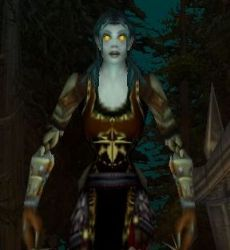

Thamel
Age : 20
Sexe : Femme
Race : Mort-vivant
Faction : Horde
Formation : Guerrier
Description : Doucement sur les pavés de Stormwind retentissent des clapotis, une course pressée sur les pavés mouillés de la vieille ville. Thamel, se hâtait pour échapper à l'orage cataclysmique qui s'abattait sur la cité.
La frêle jeune femme était transie de froid depuis déjà un moment, peu habituée à parcourir de longues distances ... Oh.. Pourquoi avait t'elle accepté cette cliente de dernière minute ?
Quelle sotte ! la réponse est évidente : trop timide, trop effacée, morte de peur devant le charisme et la voix dure de ces Dames de la Haute bourgeoisie .
Leurs bijoux trop éclatants, leurs robes de soie, leurs dentelles, leurs voix stridentes, leur suffisance; leur autorité , cela Tham ne le supportait parfois plus .. mais à chaque fois d'une voix quasi inaudible , elle répondait aux moindre de leurs caprices ; elle, la pale enfant, jamais elle n'aurait jamais leur classe ... en les servant, elle entrait un peu dans leur monde , une vie par procuration ..
Servir et aider c'était sans nul doute ce à quoi elle était destinée..
Ah ! Enfin l'auberge .. Dame Irina n'aura pas à la blâmer .. elle était même en avance ..
Thamel se pressa, trempée, de pénétrer dans l'antre chaude et accueillante.
Rapidement , elle posa le nécessaire de coiffure sur la table .. pourvu qu'elle n'ai rien oublié ... ces Dames ne permettent pas le moindre écart ..
Le feu crépitant l'attirait, les buches craquaient, lentement , elle dénoua sa cape usée, elle allait avancer souriante vers l'âtre quand soudain .. elle la vit ..
Une forme recroquevillé sur elle même , la tête dans les genoux, secouée de sanglots silencieux .. dans un coin obscur et reculé de la pièce.
Son cur ne fit qu'un tour , hésitante, elle s'approcha.
Une main douce, qu'elle voulait apaisante, se posa sur l'épaule de la femme en pleurs, pour le moment , elle ne pouvait voir qu'un long rideau de cheveux bruns, quand enfin elle leva les yeux vers Thamel , la malheureuse lui offrit une vision étonnante : des yeux noyés de larmes .. mais tellement durs .. un visage d'une beauté peu commune mais .. on arrivait pas au juste à déchiffrer à ce moment précis si c'était le désespoir ou la haine qui l'habitait ... peut être les deux ..
Thamel, recula, elle la fixait étrangement ..
- Dame .. je .. ne voulais pas m'immiscer .. j'ai pensé que peut être..
Elle n'eu pas le temps de finir sa phrase, Scheena se leva, essuya ses yeux d'un geste sec, elle se redressa d'un coup, droite, fière ...Terriblement impressionnante ..
-
*hurlant* vous ne comprenez donc pas !!! j'en ai plus qu'assez que l'on se mêle de ma vie !! plus qu'assez qu'on me juge ! oh .. la misérable petite chose qui pleure ... oh elle a besoin d''être rassurée, protégée !! NON !!!! Laissez moi tranquille tous ... Laissez moi vivre ma vie ! Faire mes choix !! Je ne veux pas de votre pitié.. dégagez *
Thamel, resta bouche bée, ne bougea pas ... elle devait tellement souffrir cette femme, qu'est ce qui avait pu la mettre dans cet état ?
Elle bafouilla :
-
-
Etes vous certaine belle Dame , vous sembliez si perdue , si .. faible..
- Ne prononcez jamais ce mot en parlant de moi !! JAMAIS ! C'est exactement ce qu'il a dit misérable et faible !!! Radjah .. pas lui .. pas ces mots .. de sa bouche c'est trop .. humiliant ..
Scheena crispa sa main sur ses épées, dans un état second ..
Sans réfléchir , elle se rua vers Thamel, hors d'elle , libérant un flot de paroles monstrueuses sans queue ni tête, habitée par une haine incommensurable, sa colère , elle la libérait tant verbalement que physiquement sur Tham incapable de se défendre.
C'est seulement quand elle s'écroula au sol , que Scheena réalisa ce qu'elle venait de faire .. elle avait planté son épée en plein ventre , et elle respirait encore ..
Une voix , au loin , resonna, douce, chaude.. Valnar .. il la cherchait ..
Précipitament, Scheena porta le corps à son épaule et se rua sur la premiére armoire à l'étage, sans se soucier de desarticuler le pauvre corps dejà meutri ..de toute facon la pauvre chose mourrait d'elle même, pas le temps de s'attendrir, il faut la cacher et vite ... Au pire elle verifirait plus tard .. elle l'achéverais si besoin .. pour ne pas qu'elle parle .
Telle une poupée de chiffon , la douce coiffeuse fut projetée sans plus de précautions .
Si sombre .. si froid .. si humide .. Thamel glissait peu à peu dans les lymbes de l'inconscience .. crier .. oh non . .elle se sentait si faible .. Hyptonisée qu'elle était par la vision de la belle brune et de son amant à travers une breche du bois .. Pourquoi il ne s'est pas rendu compte de l'état fébrile de sa compagne .. pourquoi n'a t'il pas posé ses yeux sur le desordre de la piéce .. non il n'a d'yeux que pour la meutriére .. il ne l'aiderais pas ..
*Plus tard dans la nuit*
La porte grince.. s'ouvre lentement.. Thamel eu à peine le temps de lever les yeux vers la voleuse.. C'était fini .. Une douleur sourde sur sa tête ... et le néant .. les ombres qui la devorent ..
Plus d'infos sur Thamel >>>